MindCare AI es una aplicación web inteligente diseñada para ayudarte a comprender
y gestionar mejor tus emociones a través de un diario interactivo potenciado por
Inteligencia Artificial. La aplicación analiza tus textos emocionales y te proporciona
retroalimentación personalizada, estadísticas y seguimiento de hábitos.
Características Principales
🎭 Análisis Emocional con IA: Detecta automáticamente emociones en tus textos usando tecnología avanzada.
📊 Historial Completo: Guarda y visualiza todas tus entradas emocionales con filtros y estadísticas.
📝 Gestión de Hábitos: Crea, rastrea y mejora tus hábitos diarios con sistema de rachas.
🔐 Seguridad: Tus datos están protegidos con encriptación y autenticación segura.
💾 Respaldo: Exporta tus datos cuando quieras.
Emociones Reconocidas
El sistema puede detectar y analizar las siguientes 10 emociones:
😊
Alegría
😢
Tristeza
😠
Enojo
😨
Miedo
😲
Sorpresa
😖
Disgusto
😰
Ansiedad
😓
Estrés
😌
Calma
🥺
Nostalgia
2. 💻 Requisitos del Sistema
Navegadores Compatibles
Navegador
Versión Mínima
Recomendado
Google Chrome
90+
✅ Altamente recomendado
Mozilla Firefox
88+
✅ Recomendado
Microsoft Edge
90+
✅ Recomendado
Safari
14+
⚠️ Compatible
Requisitos Técnicos
Conexión a Internet estable
JavaScript habilitado
Cookies y almacenamiento local habilitados
Resolución mínima de pantalla: 1024x768
💡 Consejo: Para una mejor experiencia, utiliza Google Chrome o Firefox
en su última versión y asegúrate de tener una conexión estable a Internet.
3. 📝 Registro de Usuario
Para comenzar a usar MindCare AI, primero necesitas crear una cuenta.
El proceso de registro es simple y rápido.
Pasos para Registrarse
Abre tu navegador y accede a la aplicación en: http://localhost:3000
Haz clic en el botón Registrarse en la página principal
Completa el formulario con los siguientes datos:
Nombre completo: Tu nombre (mínimo 2 caracteres)
Email: Tu dirección de correo electrónico válida
Contraseña: Una contraseña segura (mínimo 6 caracteres)
Haz clic en el botón Crear Cuenta
Si todo es correcto, serás redirigido automáticamente a la página de inicio de sesión
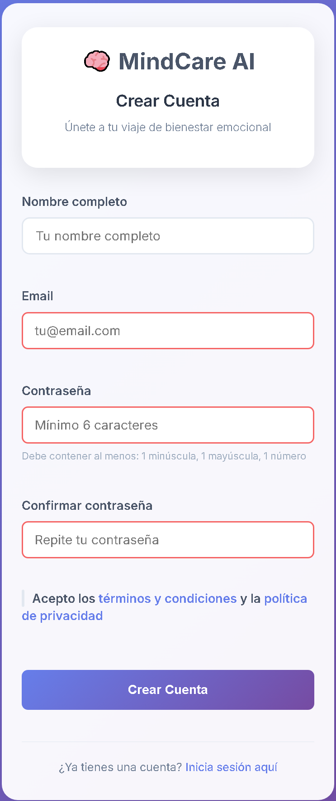
Figura 1: Formulario de registro de usuario
Elementos del Formulario
Campo
Descripción
Requisitos
Nombre
Tu nombre completo o nombre de usuario
Mínimo 2 caracteres
Email
Correo electrónico único
Formato válido de email
Contraseña
Contraseña para tu cuenta
Mínimo 6 caracteres
⚠️ Importante: Tu contraseña se almacena de forma encriptada y no puede
ser recuperada. Asegúrate de recordarla o anotarla en un lugar seguro.
💡 Consejo de Seguridad: Utiliza una contraseña que incluya letras,
números y caracteres especiales para mayor seguridad.
4. 🔐 Inicio de Sesión
Una vez que hayas creado tu cuenta, puedes iniciar sesión en cualquier momento
para acceder a tus datos y funcionalidades.
Pasos para Iniciar Sesión
Accede a la página principal de MindCare AI
Haz clic en el botón Iniciar Sesión
Ingresa tu email y contraseña
Haz clic en Ingresar
Si las credenciales son correctas, serás redirigido al panel principal
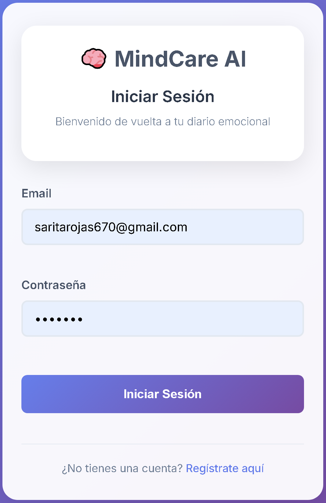
Figura 2: Página de inicio de sesión
Navegación Principal
Una vez que inicies sesión, verás el menú de navegación en la parte superior con
las siguientes opciones:
Botón
Icono
Función
Diario
📝
Página principal para análisis emocional
Historial
📊
Ver todas tus entradas emocionales guardadas
Hábitos
✅
Gestionar tus hábitos diarios
Cerrar Sesión
🚪
Salir de tu cuenta de forma segura
📌 Nota: Tu sesión se mantiene activa incluso si cierras el navegador,
gracias al sistema de tokens JWT. Para mayor seguridad, cierra sesión cuando no estés
usando la aplicación.
5. 🎭 Análisis Emocional
Esta es la función principal de MindCare AI. Aquí puedes escribir sobre cómo te sientes
y la inteligencia artificial analizará tus emociones.
Realizar un Análisis
Ve a la página principal (botón 📝 Diario)
En el área de texto grande, escribe sobre cómo te sientes
Mínimo 10 caracteres
Sé sincero y descriptivo
Puedes escribir todo lo que quieras
Haz clic en el botón 🔮 Analizar Emoción
Espera unos segundos mientras la IA procesa tu texto
Verás los resultados del análisis en pantalla
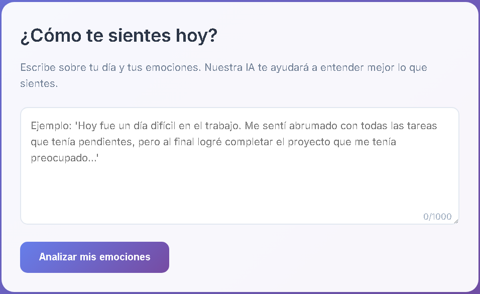
Figura 3: Área de análisis emocional
Interpretando los Resultados
Después del análisis, verás la siguiente información:
1. Emoji Animado
Un emoji grande que representa tu emoción principal. El emoji aparece con una
animación suave para captar tu atención.
2. Emoción Principal
El nombre de la emoción detectada (Alegría, Tristeza, Enojo, etc.) en texto grande
y claro.
3. Nivel de Confianza
Una barra de progreso que muestra qué tan segura está la IA de su análisis:
0-40%: Confianza baja (el texto puede ser ambiguo)
41-70%: Confianza media (análisis moderado)
71-100%: Confianza alta (análisis muy preciso)
4. Desglose de Emociones
Una lista que muestra todas las emociones detectadas en tu texto con sus respectivos
porcentajes. Esto te ayuda a entender la complejidad de tus sentimientos.
5. Retroalimentación Personalizada
Un mensaje personalizado basado en tu emoción principal, con consejos y palabras
de apoyo específicas.
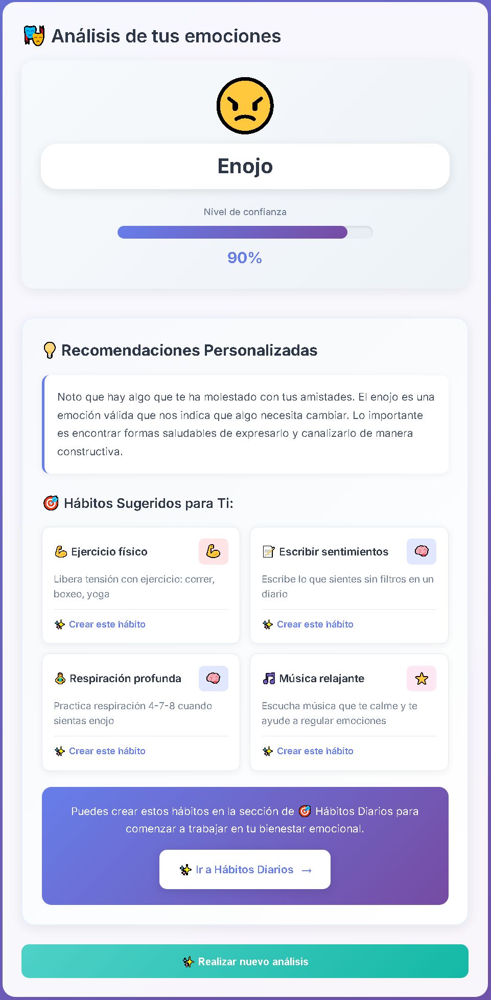
Figura 4: Resultados del análisis emocional
Botones de Acción
Después de ver los resultados, puedes:
🔄 Realizar Nuevo Análisis -
Limpia la pantalla para hacer otro análisis
📊 Ver Historial -
Te lleva directamente a tu historial de emociones
💡 Consejos para Mejores Resultados:
Escribe al menos 2-3 oraciones
Sé específico sobre lo que sientes
Usa palabras descriptivas de emociones
No te preocupes por la gramática perfecta
📌 Nota: Cada análisis se guarda automáticamente en tu historial,
por lo que puedes consultarlo más tarde sin necesidad de guardarlo manualmente.
6. 📊 Historial de Emociones
El historial te permite ver todas tus entradas emocionales anteriores, con estadísticas
y la posibilidad de filtrarlas por fecha y emoción.
Acceder al Historial
Haz clic en el botón 📊 Historial en el menú superior
La página cargará automáticamente todas tus entradas
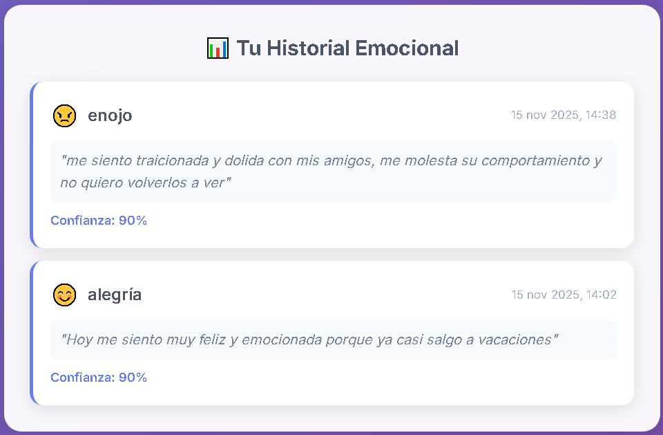
Figura 5: Vista del historial emocional
Componentes del Historial
1. Estadísticas Generales
En la parte superior verás tres tarjetas con información clave:
Estadística
Descripción
📝 Total de Entradas
Número total de análisis emocionales registrados
🎭 Emoción más Común
La emoción que más frecuentemente experimentas
📊 Confianza Promedio
Nivel promedio de confianza de todos tus análisis
2. Lista de Entradas
Cada entrada muestra:
Fecha y hora: Cuándo hiciste el análisis
Preview del texto: Primeras palabras de tu entrada
Badge de emoción: Etiqueta de color con la emoción detectada
Nivel de confianza: Porcentaje de precisión del análisis
3. Ver Detalles
Haz clic en cualquier entrada de la lista
Se abrirá un modal (ventana emergente) con:
Texto completo de tu entrada
Emoción detectada con emoji
Confianza del análisis
Desglose completo de emociones
Fecha y hora exactas
Haz clic en ❌ o fuera del modal para cerrarlo
💡 Consejo: Revisa regularmente tu historial para identificar patrones
en tus emociones y entender mejor cómo te sientes a lo largo del tiempo.
📌 Nota: El botón 🔄 Actualizar
recarga la lista de entradas, útil si acabas de hacer un nuevo análisis.
7. ✅ Sistema de Hábitos
El módulo de hábitos te ayuda a crear, rastrear y mejorar tus hábitos diarios relacionados
con tu bienestar emocional.
Acceder al Sistema de Hábitos
Haz clic en el botón ✅ Hábitos en el menú superior
Llegarás a la página principal de gestión de hábitos
Crear un Nuevo Hábito
Haz clic en el botón ➕ Nuevo Hábito
Completa el formulario con la siguiente información:
Campo
Descripción
Ejemplo
Nombre
Título corto del hábito
"Meditar 10 minutos"
Descripción
Detalles adicionales (opcional)
"Meditación matutina antes del desayuno"
Categoría
Tipo de hábito
Personal, Salud, Productividad, Social
Frecuencia
Con qué frecuencia lo harás
Diaria, Semanal, Personalizada
Icono
Emoji representativo
🧘 🏃 📚 💪
Color
Color identificativo
Azul, Verde, Rojo, etc.
Haz clic en Guardar Hábito
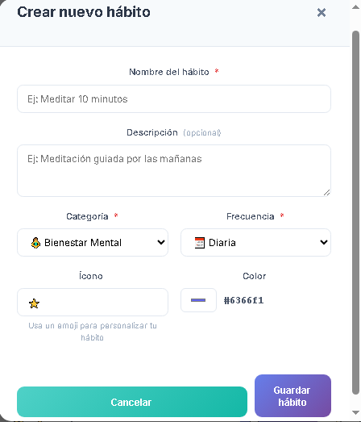
Figura 6: Formulario para crear un nuevo hábito
Marcar Hábitos Completados
En la página de hábitos, verás una lista de tus hábitos para hoy
Cada hábito tiene una casilla de verificación (☑️)
Haz clic en la casilla cuando completes el hábito
El hábito se marcará como completado y se agregará a tu racha
Puedes desmarcar si fue un error
Visualizar Progreso
Para cada hábito puedes ver:
🔥 Racha Actual: Días consecutivos que has completado el hábito
🏆 Mejor Racha: Tu récord de días consecutivos
📊 Progreso Semanal: Cuántas veces completaste el hábito esta semana
📈 Progreso Mensual: Cuántas veces lo completaste este mes
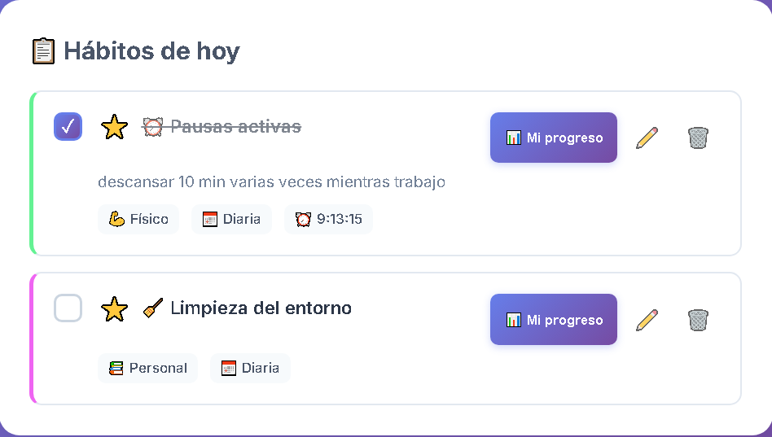
Figura 7: Vista de hábitos diarios con opciones para marcar completados
Estadísticas de Hábitos
El sistema te muestra un dashboard completo con las métricas más importantes de tu progreso:
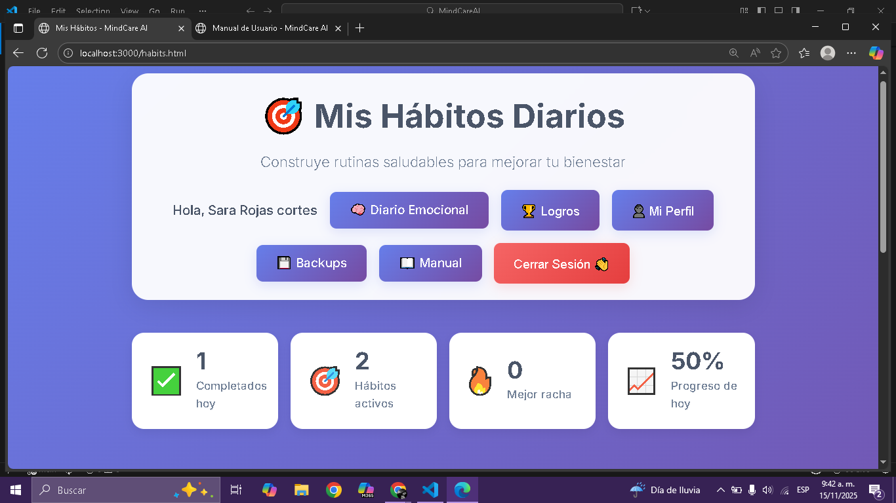
Figura 8: Estadísticas generales de hábitos - muestra cuántos completaste hoy, total de hábitos activos, tu mejor racha y el porcentaje de progreso diario
Métrica
Descripción
✅ Completados hoy
Cantidad de hábitos que has completado hoy
🎯 Hábitos activos
Total de hábitos que tienes configurados
🔥 Mejor racha
Tu récord de días consecutivos cumpliendo hábitos
📈 Progreso de hoy
Porcentaje de hábitos completados del día
Seguimiento Individual de Hábitos
Cada hábito tiene su propia página de progreso donde puedes ver:
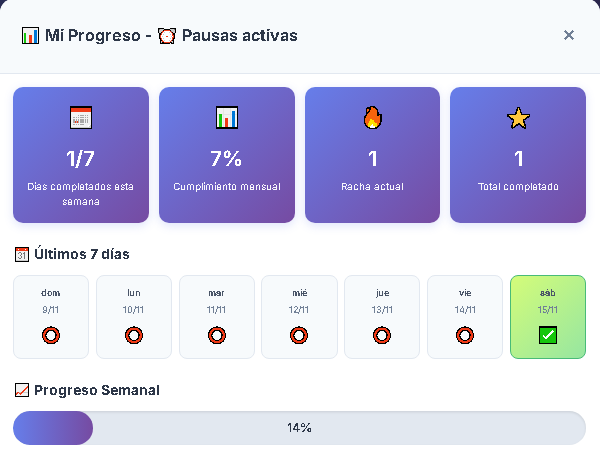
Figura 9: Progreso detallado de un hábito individual con calendario semanal y estadísticas
📅 Días completados esta semana: Cuántos días de los últimos 7 cumpliste el hábito
📊 Cumplimiento mensual: Porcentaje de días del mes que completaste el hábito
🔥 Racha actual: Días consecutivos cumpliendo el hábito
✅ Total completado: Cuántas veces en total has completado este hábito
📈 Progreso semanal: Visualización gráfica de tu desempeño semanal
Sistema de Logros
A medida que completas hábitos y mantienes rachas, desbloqueas logros e insignias especiales:
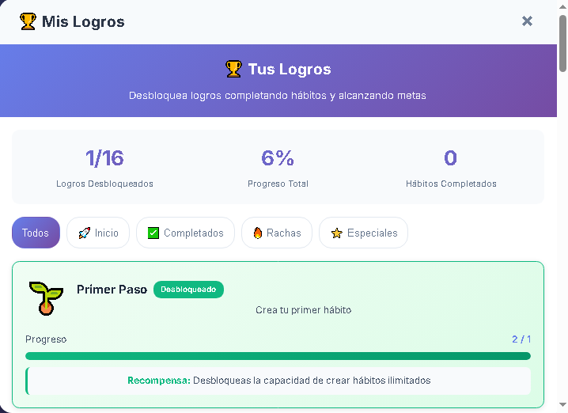
Figura 10: Sistema de logros con insignias y progreso general
Tipo de Logro
Cómo Desbloquearlo
🌱 Primer Paso
Crea tu primer hábito
🔥 Inicio
Mantén una racha de 3 días
⭐ Especiales
Completa hábitos marcados como especiales
🏆 Completados
Alcanza diferentes niveles de hábitos completados
Categorías de Hábitos
Categoría
Descripción
Ejemplos
Personal
Desarrollo personal y autocuidado
Meditar, Journaling, Lectura
Salud
Bienestar físico y mental
Ejercicio, Dormir 8h, Tomar agua
Productividad
Trabajo y eficiencia
Estudiar, Planificar el día, Deep work
Social
Relaciones y conexiones
Llamar familia, Socializar, Ayudar
Gestionar Hábitos Existentes
Para cada hábito puedes:
✏️ Editar: Modificar nombre, descripción, categoría, etc.
⏸️ Pausar: Desactivar temporalmente sin perder el progreso
▶️ Activar: Reactivar un hábito pausado
🗑️ Eliminar: Borrar permanentemente el hábito
💡 Consejos para el Éxito:
Empieza con 2-3 hábitos simples
Sé realista con la frecuencia
Vincula nuevos hábitos con rutinas existentes
Celebra tus rachas, por pequeñas que sean
No te desanimes si rompes una racha, ¡empieza de nuevo!
📌 Nota: Los hábitos están diseñados para complementar tu análisis emocional.
Hábitos saludables pueden mejorar significativamente tu estado emocional.
8. 👤 Mi Perfil
Tu perfil es el centro de control de tu cuenta donde puedes ver tu información personal
y tus estadísticas generales.
Acceder al Perfil
Haz clic en el botón 👤 Mi Perfil en el menú principal
Se abrirá una ventana modal con toda tu información
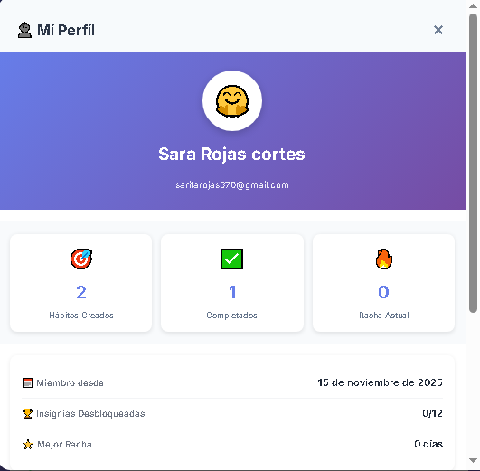
Figura 11: Vista del perfil de usuario con estadísticas personales
Información del Perfil
Sección
Contenido
Información Personal
Nombre completo y correo electrónico
🎯 Hábitos Creados
Total de hábitos que has configurado
✅ Completados
Cantidad total de hábitos completados
🔥 Racha Actual
Días consecutivos manteniendo tus hábitos
📅 Miembro desde
Fecha en que creaste tu cuenta
🏆 Insignias Desbloqueadas
Total de logros conseguidos
⭐ Mejor Racha
Tu récord de días consecutivos
Opciones del Perfil
Desde tu perfil puedes:
Ver estadísticas: Revisa tu progreso global
Acceder al manual: Botón directo para consultar esta guía
Crear respaldos: Exporta tus datos
Cerrar sesión: Salir de tu cuenta de forma segura
💡 Consejo: Revisa tu perfil regularmente para monitorear tu progreso
y mantenerte motivado con tus logros.
9. 💾 Respaldo de Datos
MindCare AI te permite exportar todos tus datos para tener una copia de seguridad
o para transferirlos a otro dispositivo.
Crear un Respaldo
En el menú superior, busca la opción de respaldo o configuración
Haz clic en 💾 Crear Respaldo
El sistema generará un archivo con todos tus datos:
Todas tus entradas emocionales
Todos tus hábitos
Todas las configuraciones
Se descargará automáticamente un archivo JSON
Guarda este archivo en un lugar seguro
¿Qué Incluye el Respaldo?
Tipo de Dato
Incluido
Detalles
Análisis Emocionales
✅ Sí
Texto completo, emociones, fechas
Hábitos
✅ Sí
Configuración y progreso
Estadísticas
✅ Sí
Rachas y contadores
Contraseña
❌ No
Por seguridad, nunca se exporta
⚠️ Importante: El archivo de respaldo contiene información sensible.
Guárdalo en un lugar seguro y no lo compartas con nadie.
💡 Recomendación: Crea respaldos periódicos (una vez al mes) para
no perder tu progreso en caso de problemas técnicos.
10. 🔧 Solución de Problemas
Problemas Comunes y Soluciones
No puedo iniciar sesión
Verifica que tu email y contraseña sean correctos
Asegúrate de que no haya espacios adicionales
Comprueba que CAPS LOCK no esté activado
Si olvidaste tu contraseña, contacta al administrador
El análisis emocional no funciona
Verifica tu conexión a Internet
Asegúrate de escribir al menos 10 caracteres
Recarga la página (F5) y vuelve a intentar
Si el problema persiste, el sistema usará análisis por palabras clave
No veo mis entradas en el historial
Haz clic en el botón 🔄 Actualizar
Verifica que estés usando la cuenta correcta
Comprueba los filtros (puede que estén ocultando tus entradas)
Selecciona "Todo" en el filtro de período
Los hábitos no se guardan
Verifica que todos los campos requeridos estén llenos
Asegúrate de hacer clic en "Guardar"
Comprueba tu conexión a Internet
Recarga la página y vuelve a intentar
La página se ve mal o desordenada
Limpia la caché de tu navegador:
Chrome/Edge: Ctrl + Shift + Delete
Firefox: Ctrl + Shift + Delete
Actualiza la página con Ctrl + F5
Intenta con otro navegador
Verifica que JavaScript esté habilitado
Cerré sesión sin querer
No te preocupes, tus datos están seguros
Simplemente vuelve a iniciar sesión
Todos tus datos seguirán ahí
⚠️ Problemas Persistentes: Si ninguna solución funciona, contacta
al soporte técnico proporcionando detalles del problema:
Navegador y versión
Qué estabas haciendo cuando ocurrió el error
Mensaje de error (si aparece alguno)
10. 📞 Contacto y Soporte
Si necesitas ayuda adicional o tienes sugerencias para mejorar MindCare AI,
estamos aquí para ayudarte.
Información de Contacto
📧 Email de Soporte: soporte@mindcareai.com (Respuesta en 24-48 horas)
🌐 Sitio Web: www.mindcareai.com
💬 Reportar un Error: bugs@mindcareai.com
💡 Sugerencias: feedback@mindcareai.com
Recursos Adicionales
FAQ (Preguntas Frecuentes):
Visita nuestra página de preguntas frecuentes para respuestas rápidas
Video Tutoriales:
Encuentra tutoriales en video en nuestro canal de YouTube
Blog:
Lee artículos sobre salud mental y uso de la aplicación
Comunidad:
Únete a nuestra comunidad de usuarios para compartir experiencias